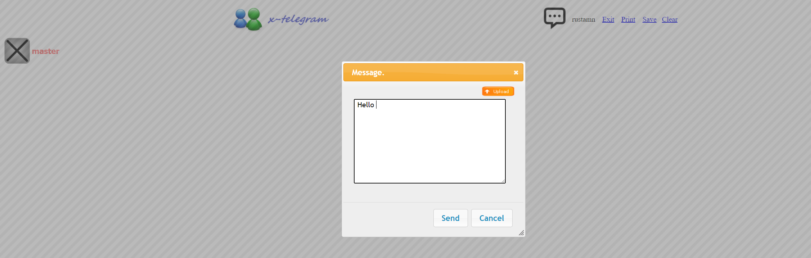
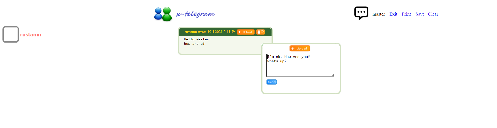
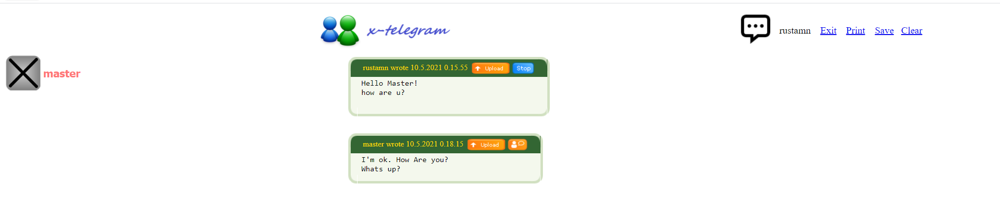
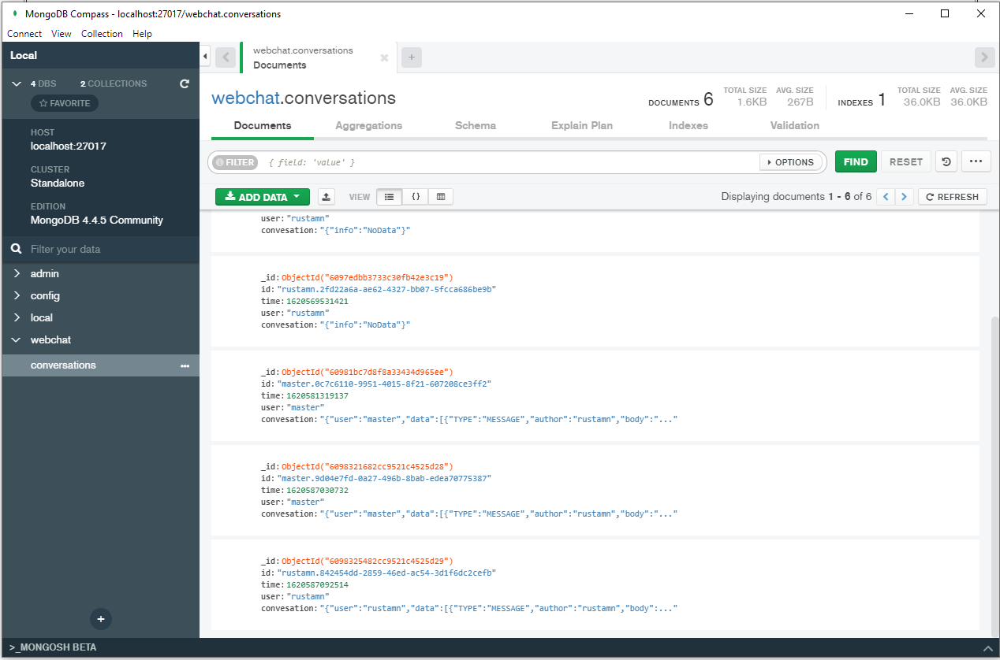

| Web Chating service. How use one.
|
|
| Synopsis |
WebChat is liteweight analog of well known service such as Telegram, but with restricted functionality.
This service do not store conversation by default. All conversations placed in memory, so, thus,
nobody could read ones as well as copy. User can store the particular conversation on demand as well as remove ones.
User can also to send some file to receipient(s). And practically, user may stay anonymous...
|
| Start On ... |
How to start? Just enter some unique name in the Login field and Login On.
This name will identify you in webChat Service session.
|
|
| Send Message or Reply On one |
On left side of the screen you will see possible and available receipients of you. Just check on correspondings and
start message construction by choosing button "New Message" on top of the screen like this...
|
|  |
Someone will get your message and can answer on it like this ...
|
|  |
| See responses and proceed conversation |
User can see conversation and own personal answers/messages and proceed current
WebChat Conversation service.
|
|  |
| Usage of stored conversations |
User can store or remove particular conversation. Storage based upon MongoDB NoSql solution and all records may be available with use
some ad hock tools likewise MongoDB Compass and etc. User can remove all his/her stored conversations.
|
|  |
| |
| Copyrights © rustemnasibullin@yahoo.com |